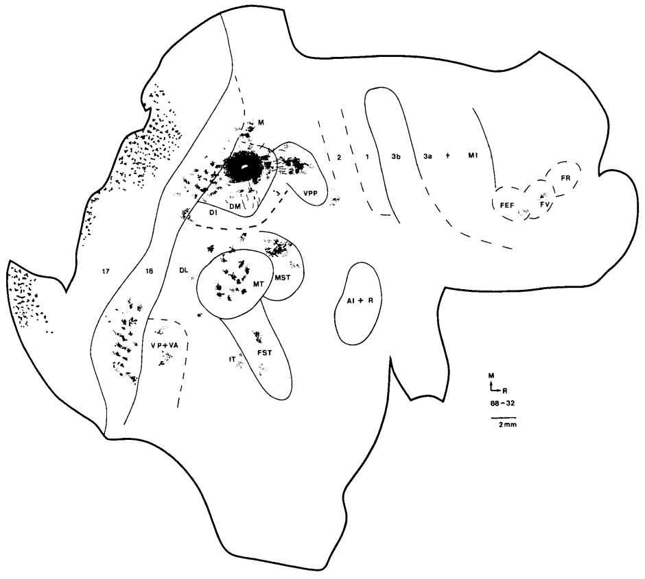
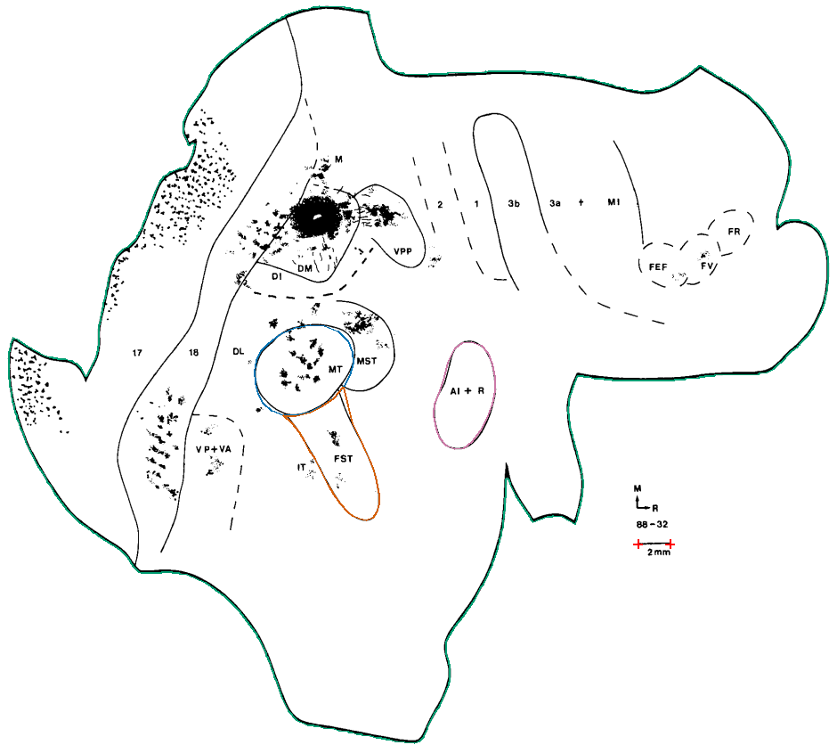

Source image, saved anatomical outlines and scale endpoints. Unfinished fields are NA.
First-run pilot: whole outline plus MT, FST and AI + R. Remaining fields are NA. Anatomical review is pending; this is not a completed paper.


| Field | mm² | % neocortex | Status |
|---|---|---|---|
| Neocortex outline | 1304.031 | 100.000 | provisional; anatomical review required |
| MT | 26.656 | 2.044 | provisional; anatomical review required |
| FST | 22.150 | 1.699 | provisional; anatomical review required |
| AI + R | 18.382 | 1.410 | provisional; anatomical review required |
| 17 | NA | NA | not_yet_digitized |
| 18 | NA | NA | not_yet_digitized |
| DL | NA | NA | not_yet_digitized |
| DM | NA | NA | not_yet_digitized |
| DI | NA | NA | not_yet_digitized |
| M | NA | NA | not_yet_digitized |
| VPP | NA | NA | not_yet_digitized |
| 2 | NA | NA | not_yet_digitized |
| 1 | NA | NA | not_yet_digitized |
| 3b | NA | NA | not_yet_digitized |
| 3a | NA | NA | not_yet_digitized |
| MI | NA | NA | not_yet_digitized |
| FEF | NA | NA | not_yet_digitized |
| FV | NA | NA | not_yet_digitized |
| FR | NA | NA | not_yet_digitized |
| IT | NA | NA | not_yet_digitized |
| VP + VA | NA | NA | not_yet_digitized |
| MST | NA | NA | not_measurable |